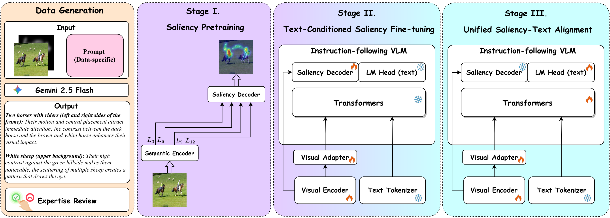

Predicting human gaze is a core capability for applications ranging from web/UI design analysis to robotics and human-computer interaction. Yet, most visual attention modeling methods output only a dense saliency map, which is often insufficient for action: practitioners need to connect attention peaks to discrete elements in the scene (what) and understand the drivers of those peaks in context (why), while remaining robust to domain shift across natural images, commercial content, and UI/web layouts. We introduce OpenVAM (Open-world Visual Attention Modeling with VLMs), a unified framework that jointly addresses universality and explainability across heterogeneous domains and supervision modalities. OpenVAM adopts a decoupled-but-aligned design: a dedicated dense visual pathway provides stable, spatially precise localization, while an instruction-following vision–language semantic head generates grounded what/why explanations conditioned on the same image and data-type prompts. A three-stage training strategy preserves strong localization priors while progressively introducing language grounding via parameter-efficient adaptation without perturbing the saliency branch. We further propose a scalable pipeline to generate multi-domain saliency-reason annotations for training and systematic evaluation. Experiments across diverse datasets show that OpenVAM improves robustness under domain shift while producing image-grounded explanations that make saliency predictions more interpretable.

Data generation and the three-stage training strategy: saliency localization, VLM attachment with frozen language backbone, then LoRA adaptation of the semantic head.
Saliency prediction performance across various datasets. Baseline results are taken from their respective papers.
| Dataset | Method | CC ↑ | KLD ↓ | AUC ↑ | SIM ↑ | NSS ↑ |
|---|---|---|---|---|---|---|
| U-EYE(Web page) | SAM | 0.580 | 1.490 | 0.811 | 0.520 | 1.640 |
| UMSI | 0.562 | 1.580 | 0.805 | 0.510 | 1.690 | |
| SAM++ | 0.580 | 1.190 | 0.800 | 0.530 | 1.660 | |
| Transalnet | 0.696 | 0.616 | 0.839 | 0.598 | 1.601 | |
| UMSI++ | 0.670 | 0.860 | 0.830 | 0.580 | 1.610 | |
| SUM | 0.731 | 0.544 | 0.846 | 0.630 | 1.704 | |
| OpenVAM-3B | 0.734(+0.41%) | 0.542(+0.37%) | 0.847(+0.12%) | 0.639(+1.43%) | 1.720(+0.94%) | |
| OpenVAM-4B | 0.737(+0.82%) | 0.538(+1.10%) | 0.847(+0.12%) | 0.627(-0.48%) | 1.718(+0.82%) | |
| OpenVAM-7B | 0.736(+0.68%) | 0.539(+0.92%) | 0.847(+0.12%) | 0.642(+1.90%) | 1.732(+1.64%) | |
| OpenVAM-8B | 0.739(+1.09%) | 0.537(+1.29%) | 0.848(+0.24%) | 0.630(+0.00%) | 1.727(+1.35%) | |
| SalECI(E-Commercial) | SSM | 0.720 | 0.599 | 0.830 | 0.611 | 1.396 |
| DeepGaze IIE | 0.560 | 0.995 | 0.842 | 0.399 | 1.327 | |
| EML-NET | 0.510 | 1.220 | 0.807 | 0.536 | 1.232 | |
| Transalnet | 0.717 | 0.873 | 0.824 | 0.534 | 1.723 | |
| Temp-Sal | 0.719 | 0.712 | 0.813 | 0.629 | 1.768 | |
| SSwin Transformer | 0.687 | 0.652 | 0.868 | 0.606 | 1.701 | |
| BrandAttn | 0.750 | 0.578 | 0.892 | 0.645 | 1.890 | |
| SUM | 0.789 | 0.473 | 0.899 | 0.680 | 2.012 | |
| OpenVAM-3B | 0.795(+0.76%) | 0.462(+2.33%) | 0.899(+0.00%) | 0.680(+0.00%) | 2.026(+0.70%) | |
| OpenVAM-4B | 0.797(+1.01%) | 0.450(+4.86%) | 0.901(+0.22%) | 0.679(-0.15%) | 2.033(+1.04%) | |
| OpenVAM-7B | 0.797(+1.01%) | 0.452(+4.44%) | 0.899(+0.00%) | 0.692(+1.76%) | 2.032(+0.99%) | |
| OpenVAM-8B | 0.792(+0.38%) | 0.460(+2.75%) | 0.900(+0.11%) | 0.678(-0.29%) | 2.022(+0.50%) | |
| OSIE(Natural scene) | UMSI | 0.746 | 0.513 | 0.856 | 0.631 | 1.788 |
| EML-NET | 0.717 | 0.537 | 0.854 | 0.619 | 1.737 | |
| SAM-ResNet | 0.758 | 0.480 | 0.860 | 0.648 | 1.811 | |
| BrandAttn | 0.761 | 0.506 | 0.860 | 0.652 | 1.840 | |
| Transalnet | 0.791 | 0.667 | 0.923 | 0.651 | 2.448 | |
| UniAR | 0.754 | 0.547 | 0.867 | 0.647 | 1.842 | |
| SUM | 0.861 | 0.340 | 0.924 | 0.727 | 3.416 | |
| OpenVAM-3B | 0.928(+7.78%) | 0.214(+37.06%) | 0.935(+1.19%) | 0.793(+9.08%) | 3.841(+12.44%) | |
| OpenVAM-4B | 0.933(+8.36%) | 0.211(+37.94%) | 0.936(+1.30%) | 0.786(+8.12%) | 3.713(+8.69%) | |
| OpenVAM-7B | 0.931(+8.13%) | 0.209(+38.53%) | 0.936(+1.30%) | 0.799(+9.90%) | 3.876(+13.47%) | |
| OpenVAM-8B | 0.926(+7.55%) | 0.226(+33.53%) | 0.934(+1.08%) | 0.787(+8.25%) | 3.715(+8.75%) | |
| Salicon(Natural scene) | UniAR | 0.901 | 0.215 | 0.870 | 0.792 | 1.947 |
| SimpleNet | 0.907 | 0.193 | 0.871 | 0.797 | 1.926 | |
| MDNSal | 0.899 | 0.217 | 0.868 | 0.797 | 1.893 | |
| MSI-Net | 0.899 | 0.307 | 0.865 | 0.784 | 1.931 | |
| GazeGAN | 0.879 | 0.376 | 0.864 | 0.773 | 1.899 | |
| UNISAL | 0.879 | 0.354 | 0.864 | 0.775 | 1.952 | |
| Transalnet | 0.890 | 0.220 | 0.867 | 0.783 | 1.924 | |
| DeepGaze IIE | 0.872 | 0.285 | 0.869 | 0.733 | 1.996 | |
| Temp-Sal | 0.911 | 0.195 | 0.869 | 0.800 | 1.967 | |
| SUM | 0.909 | 0.192 | 0.876 | 0.804 | 1.981 | |
| OpenVAM-3B | 0.911(+0.00%) | 0.184(+4.17%) | 0.876(+0.00%) | 0.805(+0.12%) | 1.989(-0.35%) | |
| OpenVAM-4B | 0.913(+0.22%) | 0.179(+6.77%) | 0.876(+0.00%) | 0.805(+0.12%) | 1.970(-1.30%) | |
| OpenVAM-7B | 0.912(+0.11%) | 0.179(+6.77%) | 0.876(+0.00%) | 0.806(+0.25%) | 1.993(-0.15%) | |
| OpenVAM-8B | 0.914(+0.33%) | 0.179(+6.77%) | 0.876(+0.00%) | 0.808(+0.50%) | 1.972(-1.20%) | |
| CAT2000(Natural scene) | FastSal | 0.721 | 0.552 | 0.860 | 0.603 | 1.859 |
| SAM-Resnet | 0.870 | 0.670 | 0.878 | 0.739 | 2.411 | |
| MSI-Net | 0.866 | 0.428 | 0.881 | 0.730 | 2.355 | |
| DVA | 0.861 | 0.449 | 0.878 | 0.734 | 2.345 | |
| UNISAL | 0.842 | 0.530 | 0.876 | 0.721 | 2.257 | |
| MDNSal | 0.889 | 0.293 | 0.878 | 0.751 | 2.329 | |
| Transalnet | 0.877 | 0.287 | 0.882 | 0.744 | 2.373 | |
| SUM | 0.882 | 0.270 | 0.888 | 0.754 | 2.424 | |
| OpenVAM-3B | 0.891(+0.22%) | 0.258(+4.44%) | 0.889(+0.11%) | 0.759(+0.66%) | 2.452(+1.16%) | |
| OpenVAM-4B | 0.892(+0.34%) | 0.256(+5.19%) | 0.889(+0.11%) | 0.759(+0.66%) | 2.442(+0.74%) | |
| OpenVAM-7B | 0.899(+1.12%) | 0.246(+8.89%) | 0.899(+1.24%) | 0.761(+0.93%) | 2.459(+1.44%) | |
| OpenVAM-8B | 0.895(+0.67%) | 0.253(+6.30%) | 0.889(+0.11%) | 0.761(+0.93%) | 2.443(+0.78%) | |
| MIT1003(Natural scene) | FastSal | 0.590 | 1.036 | 0.875 | 0.478 | 2.008 |
| SAM-Resnet | 0.746 | 1.247 | 0.902 | 0.597 | 2.752 | |
| DVA | 0.699 | 0.753 | 0.897 | 0.566 | 2.574 | |
| UNISAL | 0.734 | 1.014 | 0.902 | 0.597 | 2.759 | |
| Transalnet | 0.722 | 0.660 | 0.903 | 0.592 | 2.631 | |
| SUM | 0.768 | 0.563 | 0.913 | 0.630 | 2.839 | |
| OpenVAM-3B | 0.829(+7.94%) | 0.463(+17.76%) | 0.923(+1.10%) | 0.671(+6.51%) | 3.081(+8.52%) | |
| OpenVAM-4B | 0.829(+7.94%) | 0.473(+15.99%) | 0.923(+1.10%) | 0.655(+3.97%) | 3.044(+7.22%) | |
| OpenVAM-7B | 0.842(+9.64%) | 0.458(+18.65%) | 0.924(+1.20%) | 0.679(+7.78%) | 3.090(+8.84%) | |
| OpenVAM-8B | 0.825(+7.42%) | 0.474(+15.81%) | 0.922(+0.99%) | 0.663(+5.24%) | 3.021(+6.41%) |
Evaluation comparison across VLMs on multiple datasets. JScore measures semantic quality, while ROUGE and BLEU measure lexical overlap.
| Dataset | Method | JScore ↑ | ROUGE ↑ | BLEU ↑ | |||||
|---|---|---|---|---|---|---|---|---|---|
| R-1 | R-2 | R-L | B-1 | B-2 | B-3 | B-4 | |||
| U-EYE | Gemini-2.5-Pro | 0.739 | 0.511 | 0.172 | 0.253 | 0.403 | 0.225 | 0.129 | 0.074 |
| InternVL3.5-37B | 0.656 | 0.498 | 0.166 | 0.243 | 0.386 | 0.216 | 0.126 | 0.073 | |
| Qwen3-VL-32B | 0.737 | 0.475 | 0.154 | 0.222 | 0.360 | 0.198 | 0.115 | 0.067 | |
| Qwen2.5-VL-32B | 0.689 | 0.476 | 0.143 | 0.222 | 0.376 | 0.199 | 0.114 | 0.066 | |
| Qwen3-VL-8B | 0.689 | 0.484 | 0.149 | 0.231 | 0.387 | 0.207 | 0.116 | 0.065 | |
| Qwen2.5-VL-7B | 0.637 | 0.454 | 0.132 | 0.216 | 0.345 | 0.180 | 0.102 | 0.059 | |
| Qwen3-VL-4B | 0.679 | 0.444 | 0.119 | 0.207 | 0.345 | 0.171 | 0.090 | 0.049 | |
| Qwen2.5-VL-3B | 0.537 | 0.391 | 0.103 | 0.198 | 0.300 | 0.151 | 0.080 | 0.045 | |
| OpenVAM-3B | 0.603 | 0.429 | 0.108 | 0.196 | 0.330 | 0.156 | 0.077 | 0.040 | |
| OpenVAM-4B | 0.675 | 0.399 | 0.118 | 0.220 | 0.317 | 0.163 | 0.088 | 0.049 | |
| OpenVAM-7B | 0.628 | 0.445 | 0.139 | 0.221 | 0.355 | 0.175 | 0.098 | 0.057 | |
| OpenVAM-8B | 0.683 | 0.407 | 0.121 | 0.218 | 0.330 | 0.171 | 0.091 | 0.051 | |
| SalECI | Gemini-2.5-Pro | 0.741 | 0.519 | 0.162 | 0.254 | 0.400 | 0.215 | 0.119 | 0.065 |
| InternVL3.5-37B | 0.656 | 0.436 | 0.122 | 0.220 | 0.309 | 0.155 | 0.077 | 0.040 | |
| Qwen3-VL-32B | 0.731 | 0.450 | 0.116 | 0.209 | 0.347 | 0.165 | 0.080 | 0.039 | |
| Qwen2.5-VL-32B | 0.645 | 0.405 | 0.099 | 0.195 | 0.300 | 0.141 | 0.066 | 0.032 | |
| Qwen3-VL-8B | 0.731 | 0.446 | 0.112 | 0.212 | 0.337 | 0.158 | 0.075 | 0.036 | |
| Qwen2.5-VL-7B | 0.639 | 0.386 | 0.093 | 0.196 | 0.268 | 0.122 | 0.057 | 0.029 | |
| Qwen3-VL-4B | 0.720 | 0.400 | 0.087 | 0.187 | 0.287 | 0.122 | 0.054 | 0.027 | |
| Qwen2.5-VL-3B | 0.548 | 0.357 | 0.076 | 0.179 | 0.270 | 0.119 | 0.053 | 0.026 | |
| OpenVAM-3B | 0.692 | 0.478 | 0.130 | 0.220 | 0.369 | 0.184 | 0.096 | 0.050 | |
| OpenVAM-4B | 0.730 | 0.465 | 0.139 | 0.246 | 0.369 | 0.195 | 0.108 | 0.060 | |
| OpenVAM-7B | 0.712 | 0.489 | 0.142 | 0.248 | 0.378 | 0.196 | 0.099 | 0.058 | |
| OpenVAM-8B | 0.739 | 0.474 | 0.157 | 0.250 | 0.378 | 0.208 | 0.117 | 0.066 | |
| OSIE | Gemini-2.5-Pro | 0.747 | 0.510 | 0.165 | 0.270 | 0.412 | 0.228 | 0.126 | 0.068 |
| InternVL3.5-37B | 0.67 | 0.487 | 0.150 | 0.248 | 0.380 | 0.205 | 0.110 | 0.058 | |
| Qwen3-VL-32B | 0.76 | 0.472 | 0.147 | 0.229 | 0.345 | 0.185 | 0.100 | 0.053 | |
| Qwen2.5-VL-32B | 0.704 | 0.474 | 0.141 | 0.234 | 0.382 | 0.203 | 0.107 | 0.056 | |
| Qwen3-VL-8B | 0.734 | 0.461 | 0.129 | 0.231 | 0.354 | 0.179 | 0.092 | 0.048 | |
| Qwen2.5-VL-7B | 0.695 | 0.465 | 0.136 | 0.235 | 0.373 | 0.197 | 0.103 | 0.054 | |
| Qwen3-VL-4B | 0.727 | 0.419 | 0.097 | 0.201 | 0.316 | 0.143 | 0.069 | 0.035 | |
| Qwen2.5-VL-3B | 0.584 | 0.390 | 0.096 | 0.208 | 0.314 | 0.153 | 0.074 | 0.037 | |
| OpenVAM-3B | 0.661 | 0.472 | 0.123 | 0.220 | 0.364 | 0.178 | 0.089 | 0.047 | |
| OpenVAM-4B | 0.728 | 0.456 | 0.146 | 0.246 | 0.360 | 0.198 | 0.112 | 0.062 | |
| OpenVAM-7B | 0.697 | 0.485 | 0.135 | 0.237 | 0.376 | 0.198 | 0.101 | 0.052 | |
| OpenVAM-8B | 0.730 | 0.478 | 0.158 | 0.259 | 0.390 | 0.218 | 0.124 | 0.069 | |
| Salicon | Gemini-2.5-Pro | 0.748 | 0.453 | 0.136 | 0.233 | 0.327 | 0.174 | 0.088 | 0.044 |
| InternVL3.5-37B | 0.700 | 0.483 | 0.162 | 0.256 | 0.350 | 0.197 | 0.108 | 0.057 | |
| Qwen3-VL-32B | 0.761 | 0.470 | 0.140 | 0.230 | 0.369 | 0.196 | 0.103 | 0.052 | |
| Qwen2.5-VL-32B | 0.713 | 0.480 | 0.153 | 0.245 | 0.362 | 0.199 | 0.107 | 0.057 | |
| Qwen3-VL-8B | 0.738 | 0.422 | 0.116 | 0.217 | 0.288 | 0.146 | 0.074 | 0.038 | |
| Qwen2.5-VL-7B | 0.703 | 0.467 | 0.151 | 0.243 | 0.339 | 0.187 | 0.101 | 0.053 | |
| Qwen3-VL-4B | 0.737 | 0.370 | 0.081 | 0.187 | 0.250 | 0.111 | 0.052 | 0.027 | |
| Qwen2.5-VL-3B | 0.612 | 0.413 | 0.121 | 0.225 | 0.301 | 0.159 | 0.082 | 0.042 | |
| OpenVAM-3B | 0.677 | 0.424 | 0.123 | 0.220 | 0.364 | 0.178 | 0.089 | 0.047 | |
| OpenVAM-4B | 0.740 | 0.448 | 0.159 | 0.248 | 0.353 | 0.204 | 0.118 | 0.066 | |
| OpenVAM-7B | 0.697 | 0.485 | 0.135 | 0.237 | 0.376 | 0.198 | 0.101 | 0.052 | |
| OpenVAM-8B | 0.747 | 0.454 | 0.160 | 0.251 | 0.359 | 0.207 | 0.120 | 0.067 | |
| CAT2000 | Gemini-2.5-Pro | 0.720 | 0.473 | 0.142 | 0.243 | 0.372 | 0.198 | 0.104 | 0.055 |
| InternVL3.5-37B | 0.635 | 0.443 | 0.123 | 0.228 | 0.335 | 0.171 | 0.088 | 0.046 | |
| Qwen3-VL-32B | 0.726 | 0.432 | 0.122 | 0.207 | 0.307 | 0.158 | 0.084 | 0.044 | |
| Qwen2.5-VL-32B | 0.612 | 0.436 | 0.120 | 0.215 | 0.343 | 0.175 | 0.091 | 0.048 | |
| Qwen3-VL-8B | 0.654 | 0.390 | 0.097 | 0.192 | 0.282 | 0.135 | 0.067 | 0.035 | |
| Qwen2.5-VL-7B | 0.632 | 0.421 | 0.119 | 0.218 | 0.322 | 0.167 | 0.085 | 0.045 | |
| Qwen3-VL-4B | 0.699 | 0.375 | 0.078 | 0.180 | 0.272 | 0.118 | 0.056 | 0.029 | |
| Qwen2.5-VL-3B | 0.545 | 0.367 | 0.089 | 0.202 | 0.290 | 0.139 | 0.068 | 0.035 | |
| OpenVAM-3B | 0.663 | 0.442 | 0.111 | 0.217 | 0.333 | 0.162 | 0.081 | 0.043 | |
| OpenVAM-4B | 0.703 | 0.438 | 0.127 | 0.237 | 0.338 | 0.177 | 0.096 | 0.053 | |
| OpenVAM-7B | 0.697 | 0.485 | 0.135 | 0.237 | 0.376 | 0.198 | 0.101 | 0.052 | |
| OpenVAM-8B | 0.712 | 0.447 | 0.136 | 0.250 | 0.346 | 0.185 | 0.103 | 0.057 | |
| MIT1003 | Gemini-2.5-Pro | 0.736 | 0.499 | 0.156 | 0.257 | 0.399 | 0.218 | 0.119 | 0.064 |
| InternVL3.5-37B | 0.647 | 0.466 | 0.134 | 0.235 | 0.360 | 0.189 | 0.099 | 0.053 | |
| Qwen3-VL-32B | 0.747 | 0.458 | 0.134 | 0.217 | 0.331 | 0.174 | 0.090 | 0.047 | |
| Qwen2.5-VL-32B | 0.674 | 0.463 | 0.132 | 0.226 | 0.372 | 0.194 | 0.102 | 0.054 | |
| Qwen3-VL-8B | 0.715 | 0.439 | 0.116 | 0.216 | 0.332 | 0.165 | 0.084 | 0.044 | |
| Qwen2.5-VL-7B | 0.643 | 0.443 | 0.128 | 0.226 | 0.345 | 0.182 | 0.094 | 0.049 | |
| Qwen3-VL-4B | 0.717 | 0.398 | 0.084 | 0.191 | 0.296 | 0.129 | 0.060 | 0.030 | |
| Qwen2.5-VL-3B | 0.557 | 0.383 | 0.097 | 0.206 | 0.310 | 0.152 | 0.074 | 0.038 | |
| OpenVAM-3B | 0.659 | 0.447 | 0.111 | 0.217 | 0.335 | 0.161 | 0.080 | 0.043 | |
| OpenVAM-4B | 0.705 | 0.435 | 0.128 | 0.234 | 0.343 | 0.181 | 0.098 | 0.054 | |
| OpenVAM-7B | 0.676 | 0.459 | 0.126 | 0.225 | 0.351 | 0.173 | 0.092 | 0.046 | |
| OpenVAM-8B | 0.725 | 0.449 | 0.136 | 0.244 | 0.358 | 0.191 | 0.104 | 0.058 | |
@inproceedings{openvam2026,
title = {OpenVAM: Open-World Visual Attention Modeling with VLMs},
author = {Kiana Hooshanfar and Amirhossein Kazerouni and Alireza Hosseini and Michael Brudno and Babak Taati},
booktitle = {Proceedings},
year = {2026}
}